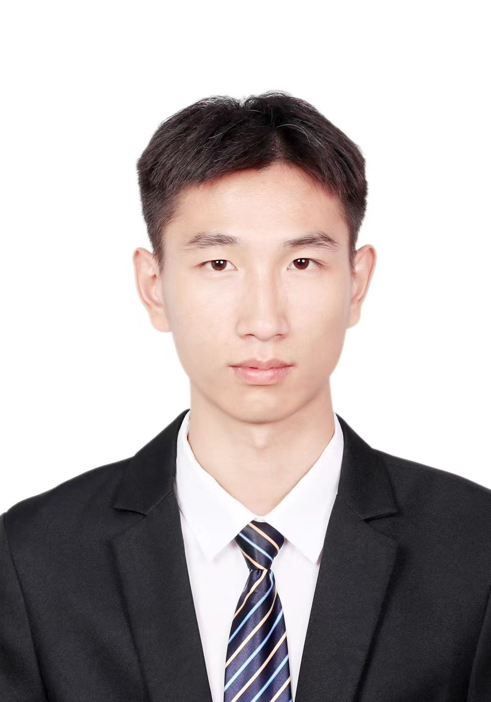

Baiqiang Yu

Doctor
Shanghai University
School of Mechanical Engineering, Electrical Engineering and Automation
Image Restoration Deep Learning Color Correction
Email: yubaiqiang2023@163.com
[Google Scholar]
[GitHub]
[Orcid]
Short Bio
I am affiliated with the School of Mechanical Engineering, Electrical Engineering and Automation at Shanghai University. My academic interests include image restoration, and deep learning.
Thank you for visiting my personal academic website.
Education
- Shanghai University, School of Mechanical Engineering, Electrical Engineering and Automation.
News
- [2026.06] One paper is accepted by TIP.
- [2026.01] One paper is accepted by PRL.
- [2026.01] One collaborative paper is accepted by PRL.
- [2025.10] One paper is accepted by PRL
- [2024.12] One paper is accepted by EAAI
- [2024.05] One paper is accepted by IEEE GRSL
Publications
- [1] W. Zhang, B. Yu, W. Zhao, Z. Liang, P. Zhuang and K. Zhu, "Underwater Image Enhancement via Intelligent Optimized Multi-Exposure Image Fusion," IEEE Transactions on Image Processing (TIP), (SCI Q1, IF=15.3).
- [2] B. Yu, L. Zhou, W. Yu, P. Zhuang and W. Zhang, "Underwater image color correction via global and local two-step optimization," Pattern Recognition Letters (PRL), (SCI Q1, IF=3.3).
- [3] B. Yu, W. Zhang, W. Yu, P. Zhuang and W. Zhao, "ZAP: Underwater Image Color Correction via Zero Approximation Principle," IEEE Geoscience and Remote Sensing Letters (IEEE GRSL), (SCI Q1, IF=4.57).
- [4] W. Zhang, B. Yu, G. Li, P. Zhuang, Z. Liang and W. Zhao, "Unified multi-color-model-learning-based deep support vector machine for underwater image classification," Engineering Applications of Artificial Intelligence (EAAI), (SCI Q1, IF=9).
- [5] L. Zhou, B. Yu, H. Li, W. Zhao and W. Zhang, "Underwater Image Color Correction via Global-Local Collaborative Strategy," Pattern Recognition Letters (PRL), (SCI Q1, IF=3.3) .
- [6] S. Sun, B. Yu, L. Xu, W. Zhao and W. Zhang, "AMDC: Attenuation map-guided dual-color space for underwater image color correction," Pattern Recognition Letters (PRL), (SCI Q1, IF=3.3) .
Reviewer
- Pattern recognition
- Scientific Reports
- Journal of King Saud University Computer and Information Sciences
- The Visual Computer
- Machine Vision and Applications
- Signal, Image and Video Processing
- Multimedia Systems